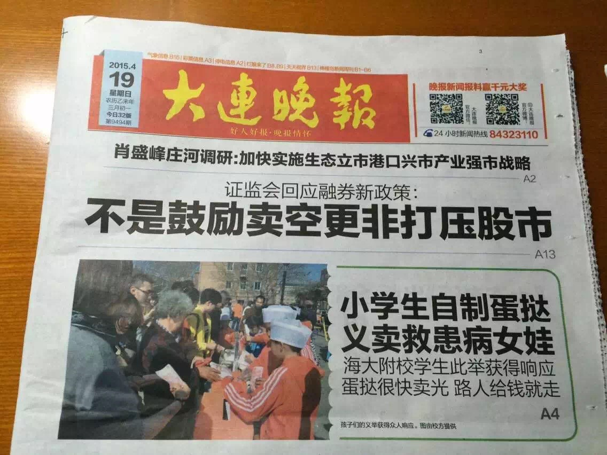

Home Page
Community Service
Rescue the Leukemia Girl!
What is this activity: While, when I was in 5th grade, I received a note from one of my classmates that there is a poor kid who is struggling against Leukemia, and her family doesn't have enough money to bring her the appropriate medical attention. I felt unfair for that girl, because there are so many people out there who have a healthy body and a happy family. Therefore, I decided to help her out. I gathered my classmate and told them my idea, and they thought that it was really great and wanted to help the girl. We soon started.
What did we do: One day after school, we sold egg tarts that are freshly made by ourselves in our school back yard. We set up two boxes, one is for the donation, and one is for selling the egg tart. A lot of people came and gathered around our selling station. Our egg tarts were sold out immediately. When we are making the new ones, so many people waited so patiently, some people even left a 20 dollar only for one egg tart and the love to the poor little girl. The winter day was cold, but the people's hearts are warm. At last, we gathered 6,000 dollars for the girl and helped her to finish the surgery.

Sell for the Autism Children
What is this activity: When I was in 6th grade, I joined the Volunteer Committee in Dalian. I received a note from the committee that a group of Autism Children made a lot of beautiful items. So we gathered the items and tried to collect money for them. The money we gathered was used to improve the environment of a non-profit school that teaches and helps those Autism children.
What did we do: We held three charity sells in total. The first two times we met in a bank and spread from inside of the bank to the outside, try to get as many people's attention as possible. We did pretty well and sold many things. More importantly, we got more people's attention on the Autism children and let the public knew that Autism actually exists and there are many people who are born with it that need help.


Hearty Party - The Party with Heart
What is this activity: When I get into the rectory school, I attended an interesting activity called the Hearty Party. It is a Chrismas Party for Rectory students. But at the same time, it is an opportunity for students to help other teenagers who are in need. A teacher who is in charge of this activity gathered donations from other companies and charity communities. At the party, students come in and sort those donations into bags. The bags are then delivered to different families who cannot afford to buy their children a bag of Christmas presents.
What did we do: This year is a little bit different, the teacher who is in charge of the party decided to get some help from the student body. An elective is formed this way. I participated in this elective, we made phone calls to companies like the target for donations, and we ask the student body for cash donations to buy gift cards for teenagers who need them. We also focused on outside of the Hearty Party. We helped out our neighbors, read to the kids in the childcare center, and talked to the elders nearby, and so on. It is an excellent elective, and we learned a lot about calling for donations and how to help others.